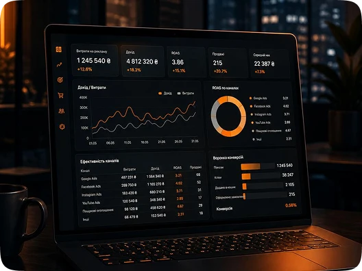
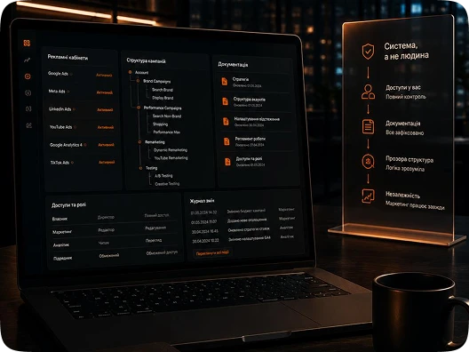
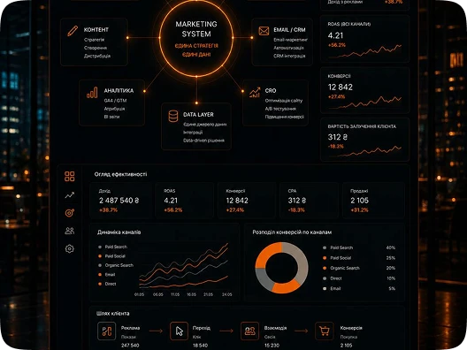
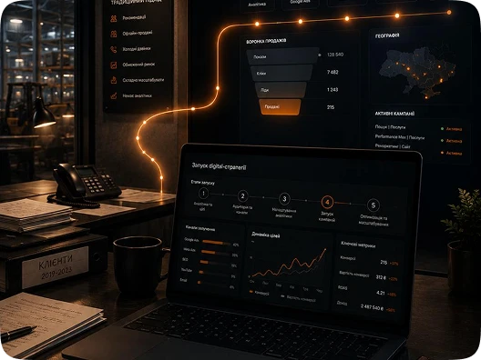
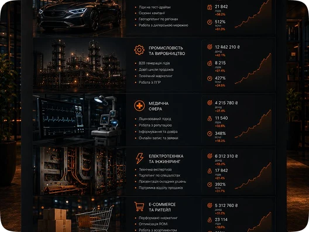

Рекламний бюджет що працює прозоро

Більшість компаній які запускають рекламу знають скільки витратили — але не знають скільки заробили. Гроші йдуть, покази є, а звʼязок між рекламним бюджетом і реальними продажами залишається незрозумілим. Ми будуємо рекламні кампанії з повноцінною аналітикою — GA4, GTM, події e-commerce — щоб власник бачив не просто кліки а реальну вартість залученого клієнта по кожному каналу і міг приймати рішення на основі цифр а не відчуттів.
Маркетинг який не залежить від однієї людини

Коли підрядник або штатний спеціаліст йде — разом з ним зникає розуміння що налаштовано в рекламних кабінетах, яка логіка кампаній і чому все працювало саме так. Новий спеціаліст починає з нуля, результати просідають, час і бюджет витрачаються на відновлення а не на розвиток. Ми передаємо повний контроль над рекламними інструментами клієнту — структуровану документацію, доступи, логіку налаштувань — щоб маркетинг залишався активом компанії а не конкретної людини.
Маркетинг як система а не набір дій

Є реклама, є SMM, є SEO — кожен інструмент запущений окремо, кожен підрядник звітує про своє, а загальної картини як всі канали працюють разом немає. В результаті бюджет розпорошений, канали дублюють одне одного або суперечать, і власник не розуміє що насправді приносить клієнтів. Ми будуємо маркетинг як єдину систему де канали підсилюють одне одного, аналітика зведена в одному місці а стратегія відповідає бізнес-цілям а не активності підрядників.
Перший вихід в digital

Компанія яка роками працювала через рекомендації або офлайн-канали і вперше виходить в digital — стикається не просто з технічними питаннями а з відсутністю розуміння з чого починати. Запустити рекламу без аналітичної бази, без налаштованих цілей і без розуміння аудиторії — це витрачений бюджет на навчання ринку замість результату. Ми структуруємо перший вхід в digital: від базового налаштування аналітики і визначення каналів до перших кампаній з контрольованим бюджетом і зрозумілими метриками.
Галузева експертиза

Маркетинг для автосалону, промислового виробника або медичної клініки — це різні аудиторії, різні цикли прийняття рішень і різна логіка рекламних кампаній. Універсальний підхід тут не працює. Ми маємо підтверджений досвід в автомобільному напрямі, промисловості, електротехніці, медицині та e-commerce — і розуміємо специфіку цих ринків не з теорії а з реальних проєктів.